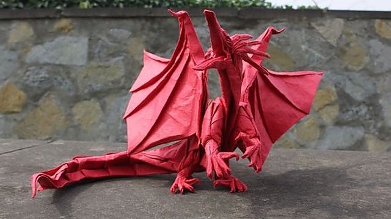

You may wish to support us here on the top right
In most Western myths, such as those of Europe, dragons are symbols of evil. They are usually fire-breathing beasts that terrorize people. In many tales, a hero makes it his mission to slay a dragon. Saint George is one of the most legendary dragon slayers. Stories from the Middle Ages tell how he rescued a princess from a dragon and then killed the beast. Dragons are also known for greedily guarding stolen treasure. C.S. Lewis’s Voyage of the Dawn Treader tells about a greedy boy named Eustace who turns into a dragon. He lives in a dark cave piled with gold, diamonds, and other valuables. In most Eastern legends, such as those of China and Japan, dragons are good creatures. They lack wings but can fly, and they live in water. They are thought to control rivers and the rain and wind. In Chinese culture, dragons are symbols of power and luck. In the past, the dragon was the symbol of the emperor of China.
A flower is the part of a plant that blossoms. Flowers produce the seeds that can become new plants. Most plants, including many trees, grow some kind of flower.
Fighter aircraft, aircraft designed primarily to secure control of essential airspace by destroying enemy aircraft in combat. The opposition may consist of fighters of equal capability or of bombers carrying protective armament. For such purposes fighters must be capable of the highest possible performance in order to be able to outfly and outmaneuver opposing fighters. Above all, they must be armed with specialized weapons capable of hitting and destroying enemy aircraft.
A battleship is a large armored warship with a main battery consisting of large caliber guns, which dominated naval warfare in the late 19th and early 20th centuries. The term battleship came into use in the late 1880s to describe a type of ironclad warship, now referred to by historians as pre-dreadnought battleships.